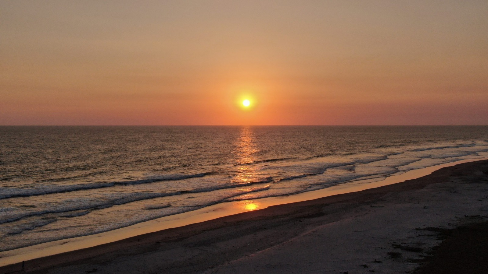
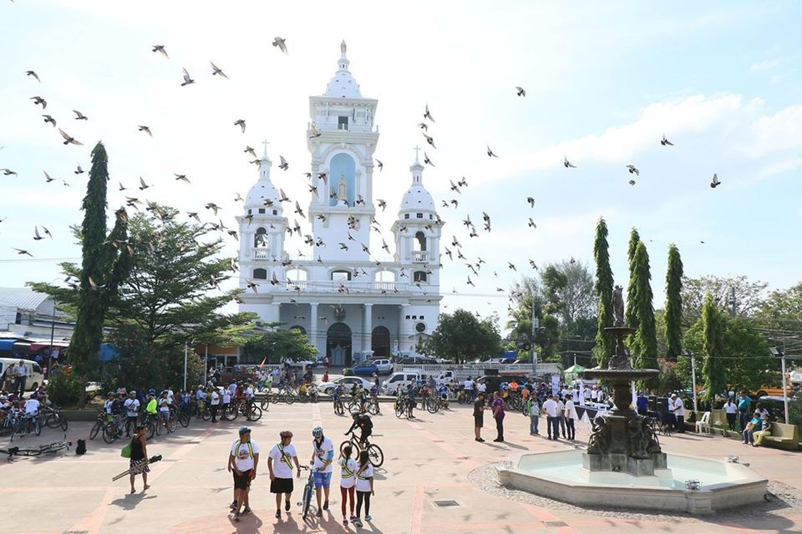

Costa del Sol Uno de los destinos de playa más extensos del país, ideal para turismo familiar. Permite disfrutar tanto del océano como del estero de Jaltepeque.

Zacatecoluca Ciudad con valor histórico y arquitectónico. Su iglesia Santa Lucía es uno de los principales referentes culturales del departamento